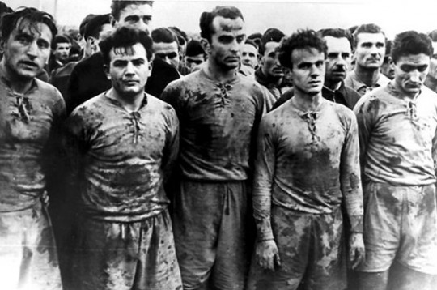
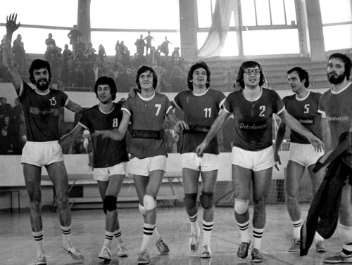
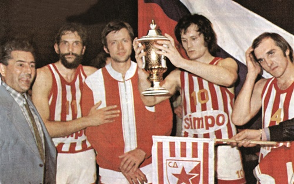

Прича о спортском друштву Црвена звезда

Спортско друштво Црвена звезда обухвата велики број клубова који се такмиче у разним спортским дисциплинама. Седиште Друштва налази се у Београду, а постоји већ 73 године. Иза оснивања Друштва крије се једна врло занимљива прича. Наиме, у фебруару 1945. године, на оснивачкој скупштини једног омладинског фискултурног друштва дуго се већало о имену овог спортског друштва. Младост или Ударник, Торпедо или Динамо, или можда Локомотива... Неодлучност у одабиру имена прекинуо је један од кумова, Слободан Ћосић, када је рекао да ће се звати Звезда. „Ако је Звезда, нека буде црвена!“, додао је други кум, Зоран Жујовић. Међу оснивачима друштва били су и Светозар Глигорић, Небојша Поповић, Мира Петровић и Милован Ћирић.
И тако је у дворани старог ДИФ-а у Делиградској 27, 4. марта 1045. године, званично основано Омладинско фискултурно друштво Црвена звезда. Данас, осим добро познатим именом, Друштво може да се похвали бројним успешним спортистима и великим бројем освојених медаља. Одлучено је да ће боје Друштва бити црвена, плава и бела, са белом петокраком звездом на црвеном дресу. За првог председника изабран је Ђорђе Паљић, док су се просторије Друштва налазиле у улици Краља Милутина 2. Први позив на упис у спортско друштво Црвена звезда изашао је у дневном листу „Политика“, 7. марта 1945. године.
Период од 1945. до 1955. године карактеристичан је по томе што је тада одиграна прва утакмица против Првог батаљона Друге бригаде КНОЈ-а. Звезда је из тог меча изашла као победник, са резултатом 3:2. Утакмица је одиграна на стадиону „Авала“ пред око 3000 гледалаца. Током те 1945. године клуб је одиграо око 36 мечева. Од тога, у 30 мечева Звезда је забележила победу, 5 је одиграно нерешено, а један меч је изгубљен, и то против Румуније у Темишвару 23. септембра 1945. године.
Почеци обележени успесима
Године 1948. Звезда први пут осваја куп Југославије победом од 3:0 у финалу са Партизаном. Копачке су носили џентлмени, а највећи међу њима био је Рајко Митић. Већ у следеће две године, 1949. и 1950., опет осваја куп Југославије. Други куп освојен је победом над Нашим крилима са 3:2, док је трећи куп освојен победом над загребачким Динамом са резултатом 3:0. Низ великих успеха настављен је када је клуб 1951. године први пут постао првак Југославије. Уместо речи кошарака, користила се “заменица” – Звезда. У десет година исто толико титула, и момака и девојака. Епитети за опис овог доба су сувишни, довољна су презимена Поповић, Роклицер, Гец, Демшар, Калембер…
Одбојкаши су прву страну књиге клупских успеха отворили 1951. године, с тим што су шампионској титули додали и Куп. Очекивања која су од тренутка постојала испунили су са још два трофеја Купа и другом клупском титулом. Како изгледа бити најбољи у земљи сазнали су рукометаши, тенисери и у више наврата атлетичари и атлетичарке. Подједнако успешни били су и веслачи, који су неретко били први у свим дисциплинама. Почетком педесетих мачеваоцима Звезде није било равних у флорету и мачу. После три освојена екипна првенства почело је са великим поштовањем да се говори о нашем шаховском клубу, баш као и боксерском захваљујући шампиону Миливоју Булату.
У периоду од 1955. до 1965. године Звезда је наставила да ниже успехе. Освојила је пет титула и три купа, а навијачи су се навикли и на успехе на међународној сцени. Полуфинале Купа европских шампиона и италијанска Фиорентина били су непремостива препрека. У витрине клуба стигао је први европски трофеј – Дунавски куп. Нови стадион је отворио капије, а на терену се посебно истицао један београдски шмекер, Драгослав Шекуларац. Кошаркашице су стигле чак до 16. титуле, а одбојкаши две године узастопно шампиони. Првенство први пут освајају и одбојкашице и почињу тријумфални низ који је касније закључен са бројем шест. Шампионским звањем хвалили су се и рукометаши, који су се домогли прве дупле круне.
Биле су то године за померање граница, за испитивање сопствених лимита. Веселин Мугоша поставио је европски рекорд на две миље, Милија Јоцовић постао је први Југословен који је куглом срушио границе од 17 и 18 метара, а Милица Рајков Нинков донела је клубу чак девет титула првакиње државе. Тениски, пливачки, рвачки и скијашки клуб добили су прве шампионе Југославије. У мачевалачки клуб стигла је Вера Јефтимијадес. Њен долазак гарантовао је титуле у флорету на државним првенствима у деценији која је уследила. Доминирали су мачеваоци, али и боксери који су освајали шампионат као по навици.
Период од 1965.до 1975.
Период од 1965. до 1975. године запамћен је по томе што су освојене још четири титуле и три Купа. Освојен је Средњоевропски Куп, и по други пут црвено-бели су играли полуфинале Купа европских шампиона. Ипак, изгубљен је добијен меч против Панатанаикоса. Популарна Маракана је била пуна као „шибица“ против Ференцвароша у полуфиналу Купа победника купова, али даље се није могло. Било је то доба фудбалске владавине једног по све специфичног играча, једанаестице, најбољег- Драгана Џајића.
Морало је да прође 14 година како би кошаркаши заслужили титулу, 11. по реду. Владимир Цветковић до звања првака носио је и гурао најмлађи шампионски тим у југословенској кошарци. Убрзо је дошла и 12. титула, а заслужена су и три Купа. Звезда је створила тим за велике домете, чији је максимум -ипак био „само“ Куп победника купова. Упоредо са мушким, настајала је женска шампионска генерација. Серија изузетних успеха најављена је титулом.
Одбојкашице су наставиле тријумфални низ. Био је то победнички налет великих размера. Немало у свакој години декаде освојена је по титула. Постава Царан, Џаковић, Раденковић, Зделар, Павловић, Јелић сматрана је за најуигранију у историји женске одбојке. После готово две деценије десила се нова „златна генерација“ одбојкаша. Освојена су три национална Купа.
Биле су то године за понос. Звезда се учврстила и на врху југословенске атлетике, а померали су границе могућег и у Европи. Ненад Стекић поставио је европски рекорд у скоку у даљ, а дугим пругама суверено је владао Дане Корица… Доминација је настављена у тенису, пливању, шаху као и у боксу у којем је Звезди после бројних титула у појединачној конкуренијци припала и екипна. Поново регистровани аутомобилски клуб брзо је израстао у најбољи у земљи.
Период од 1975. до 1995.
У периоду од 1975. до 1985. године фудбалери Црвене звезде играли су финале Купа Уефа. Трофеј је припао Борусији из Менхенгладбаха, а навијачи су се дуго љутили на италијанског судију. Још четири титуле и три Купа додате су на конто клуба. Клинци су тренирали фудбал због новог идола, Владимира Петровића Пижона. Кошаркаши Звезде одиграли су своје прво финале Купа Радивоја Кораћа, а звездина породица коначно је добила шампиона Европе. Сјајна генерација предвођена Вукицом Митић победила је првака Мађарске, Б.С.Е . У том златном добу женске кошарке освојено је још шест титула и три Купа. Исти број шампионата припао је и одбојкашицама које су, у међувремену, стигле и до финалног турнира Купа европских шампиона, као и полуфинала Купа победника Купова.
Европом је одзвањало Звездино име. Атлетичари су били неприкосновени на домаћој сцени, а за њих се убрзо сазнало и ван граница земље. У Купу европских шампиона најпре је освојено треће место, да би се недуго затим стигло до степеника више. Црвено-бели су постали клупски вицешампиони Европе захваљујући невероватном: Ненаду Стекићу, Бориславу Писићу, Владимиру Милићу… Тенисерима Црвене звезде није било равних. Освојено је осам титула екипног првака, а у појединачној конкуренцији шампиони су били Драган Савић и легендарни Слободан Боба Живојиновић. Причало се о тенисерима, али и куглашима, а нарочито хокејашима који се пробијају у сам врх домаћег хокеја и освајају Куп Југославије. Звезда је одједном узданица и карате спорта. Екипне и појединачне титуле су постале свакодневница, а убрзо су заслужене и две титуле првака Европе у традиционалном каратеу. Црвена звезда је била најбоља и у мотоциклизму, а веслачи победом у екипном пласману за све категорије на шампионату у Сплиту бележе највећи спортски резултат у историји свог клуба. Већ у првим такмичарским сезонама стрелци Звезде пригрлили су појединачне и екипне титуле.
Од 1985. до 1995. године Звезда је слављена као никада раније. Драган Стојковић Пикси збуњивао је противнике фудбалским умећем, славни Реал из Мадрида прошао је као бос по трњу, а Милан је нестао у магли. Победом у Барију над Олимпиком из Марсеја освојена је Европа, тријумфом у Токију над екипом Коло-Коло покорен је свет. Још једном играла је Звезда полуфинале КЕШ, пет пута освојен је шампионат, а три пута Куп. После 21 године кошаркаши су освојили титулу, а после девет година шампионат је поново припао кошаркашицама које су се још у три наврата показале као најбоље. Одбојкаши су пригрлили два Купа, баш колико и одбојкашице које су играле и завршни турнир Купа Цев и заслужиле две титуле. Рукометаше су две секунде делиле од титуле, а рукометашице су заиграле у елити.Атлетичари су победили у Купу шампиона, а атлетичаркама је припала вицешампионска титула. Биле су то године у којим се причало о најбржој белој штафети, о Драгутину Топићу као јуниорском светском прваку и рекордеру, о Драгутину Топићу као сениорском шампиону у скоку у вис, о бронзи Драгана Перића.
Женска екипа је поново побеђивала у флорету, а мачеваоци су као по навици освајали појединачне и екипне титуле у сабљи. Боксери Зоран Манојловић и Алекса Милосављевић били су непобедиви у рингу, а Слађан Илић на скијашким стазама. Куглаши су заслужили две титуле, баш колико и ватерполисти, а каратисти су наставили успешан шампионски низ. Аутомобилисти Звезде поново су били најбржи. Јуниорка Ружица Карајовић освојила је у дубл скулу сребрну медаљу, прво одличје југословенског женског веслања у историји, а чудесна Јасна Шекарић поставила је нови светски рекорд. Хокејашима је припала титула и две дупле круне. Стонотенисери су први пут били најбољи у држави, а блистао је Зоран Калинић. И џудисти Звезде са три екипне титуле, и чак 13 појединачних појачавају конкуренцију најбољих у Спортском друштву.
Период од 1995. до данас

У периоду од 1995. до 2005. године фудбалери Црвене звезде махом доминирају у националном Купу, у којем освајају шест трофеја, док у првенству стижу до три шампионска пехара. Кошаркаши освајају 15. шампионску титулу и побеђују у Купу Радивоја Кораћа. После трофејне суше, кошаркашице се враћају у игру освајањем 10. Купа. Уследила је дупла круна, и укупно 28 титула првака. Одбојкаши су, такође, освајањем Куп трофеја најавили шампионске амбиције. Предвођена Дејаном Брђовићем, трећа Звездина „златна генерација“ освојила је титулу шампиона, шесту клупску, а прву после 30 година. Доминацију ужичког Јединства одбојкашице су прекинуле шампионским „хет-триком“, што је значило чак 23. титуле на конту клуба. Са три узастопно освојена шампионата могли су да се похвале и рукометаши, коју су и после чак 39 година чекања освојили Куп. Овај трофеј им је припао још у два наврата, а и још једном су имали част да подигну шампионски пехар. Стигли су и до полуфинала Купа Купова, а играли су и Лигу шампиона.
Тенисери и тенисерке предвођене Јеленом Јанковић непрестано су низали титуле у појединачној и екипној конкуренцији. У шампионском ритму били су и мачеваоци, и екипно, и појединачно, и девојке и мушкарци. Боксери Звезде на државном првенству у Лозници освојили су сва три одличја. Куглаши Звезде такмичили су се у финалу Купа Европе, а онда су коначно постали и државни прваци. Европа је добро упамтила Звездине каратисте, од вицешампиона израсли су у шампионе Европе. Редовни су били на Балканским првенствима, редовни на победничким постољима државних шампионата. Нико није био прецизнији од стрелаца Звезде, не само у држави већ и у свету. Мало ко је био спретнији од џудиста и теквондиста, снажнији од дизача тегова, а нико није био убојитији од Звездиних кик-боксера, који су узели 76 медаља широм планете, а чак 665 у држави. У борилачким спортовима на значају је добило име клуба Црвена звезда Гинис. Пробудили су се бициклисти, а прву титулу за Звезду освојио је бриџ клуб. Стонотенисерима су припале све могуће титуле, што пре њих нико никада није урадио.
Од 2005. до 2015. године фудбалери су освојили две дупле круне и онда нагло стали. Са два трофеја Купа на тренутак су се тргли, да би коначно после седам година шампионска титула, 26. по реду поново била у Љутице Богдана. Златан тим из Барија проглашен је за шесту Звездину звезду.
Кошаркашима је припао још један Куп Радивоја Кораћа, који су касније поново освојили и одбранили. Црвено-бели су играли полуфинале Еврокупа и први пут стигли у ТОП 16 Евролиге. Кошаркашице су заслужиле финале регионалне лиге, а млади кошаркаши су освојили Евролигу. Шампионска титула а онда и Куп били су увод у потпуну доминацију одбојкаша. Освојили су три трипле круне (титула, Суперкуп, Куп), а у међувремену и „само“ по шампионску титулу, Суперкуп и Куп Србије. Одбојкашице су играле финале Цев Купа и у стопу пратиле одбојкаше са чак четири узастопне дупле круне. Рукометаши су три године заредом били најбољи у земљи, а рукометашице су први пут изашле у Европу.
Ватерполисти Црвене звезде показали су да су свемогући. Освојили су национални Куп, титулу после 20 година и попели се на кров Европе. Успели су да одбране и титулу и Куп и да трофејима додају и Суперкуп Европе. Ватерполисткиње су се избориле за дуплу круну. У освајању бројних екипних и појединачних титула, легандарној Јасни Шекарић придружила се Зорана Аруновић, која се најпре истакла као светска и европска јуниорска шампионка, а онда и као незаустављива сениорка. Мачеваоци су наставили свој непрестан низ екипних и појединачних титула и достигли атлетичаре по трофејности. Атлетичарке Звезде су се „претплатиле“ на титуле, а бацачици копља Татјани Јелачи припала је улога вицешампионке Европе. У пет година стонтенисери су освојили чак четири титуле. Кик боксер Драган Јовановић освојио је европско злато, а пре њега боксер Дејан Рибаћ био је трећи у Европи. Каратисти Црвене звезде су освојили прво место на Светском првенству у фудокану, а џудисти су остварили највећи успех у историји клуба освајањем 3. места на Европском клупском првенству Европе. Тенисери и тенисерке су упорно најбољи у држави. Веслачи освајају медаље, до титуле је поново дошао бриџ клуб, а први пут и Рагби 13, док је Рагби 15 стигао до пехара Купа.